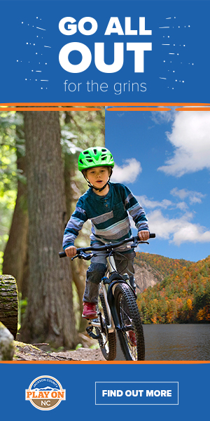
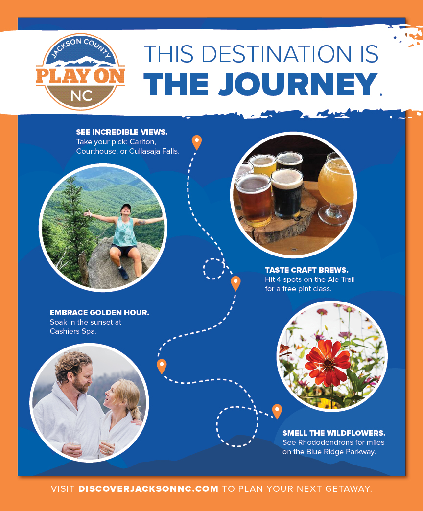
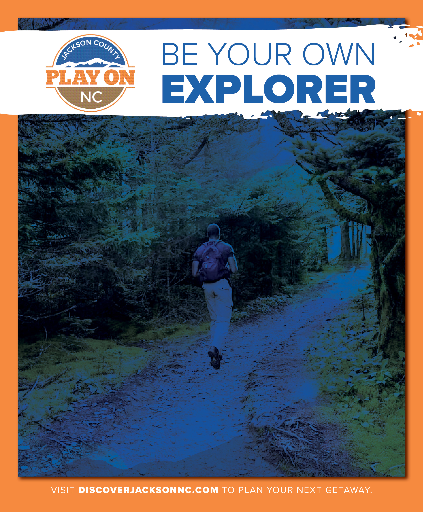

Discover
Jackson County
Tourism campaign using local imagery to promote Jackson County's attractions — print, digital, interactive maps and microsite.

Tourism campaign using local imagery to promote Jackson County's attractions — print, digital, interactive maps and microsite.
Jackson County had everything a tourism destination needs — waterfalls, mountain trails, local food, live music — but no one outside the region knew it existed. The county was competing for attention against Asheville, the Smoky Mountains, and every other corner of western North Carolina with a marketing budget. Without a unified campaign, Jackson County was invisible to the people most likely to visit.
Tourism is economic survival for rural mountain counties. Every visitor who drives past to Asheville instead is revenue that doesn't reach the local restaurants, outfitters, and shops that keep the community alive. Jackson County didn't need a rebrand — it needed a reason for people to turn off the highway. The campaign had to make potential visitors feel something before they'd ever set foot in the county.
I built a multi-channel tourism campaign anchored by local imagery and landscape photography — billboards, newspaper ads, digital content, an interactive microsite, and a custom map highlighting attractions, festivals, and food and drink options. The print creative used bold color and strong compositional lines to create an adventurous, aspirational feeling. The digital side featured interactive video, geotagged imagery, and scrolling organic content powered by the microsite — building an immersive storytelling experience that made Jackson County feel like a place you were already missing out on.
The result: a campaign that positioned Jackson County as a destination, not a drive-through — and gave the local tourism board a system they could build on year after year.


